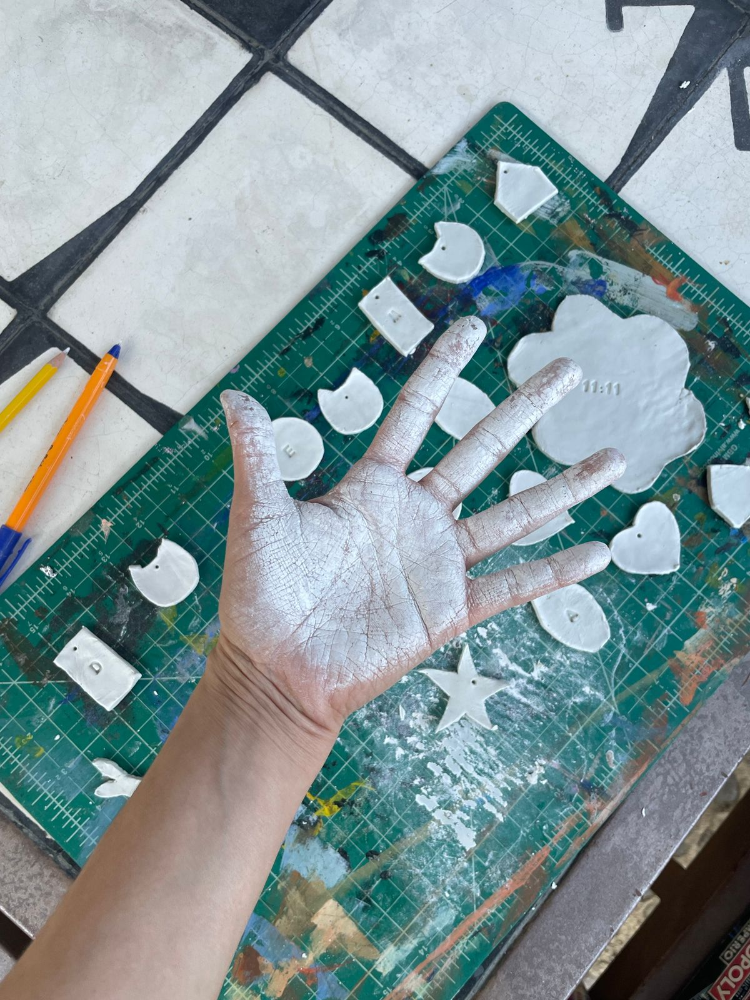
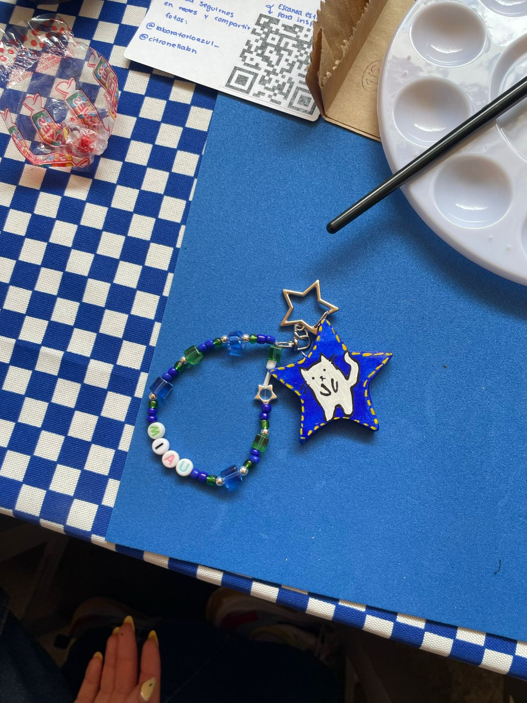

Stickers con un circuito impreso que funciona con la tecnología NFC.
Ver proyecto en vivo

Funciona de la siguiente manera: Acercas tu telefóno a donde esté el sticker NFC y manda una señal a tu telefóno para abrir ya se, un enlace, una canción, una página web...
Lo que yo he hecho:
- Llaveros para toda mi familia con sus iniciales que los llevan a un álbum de fotos compartido.
- Cree una página web personalizada para mi novia y lo añadí a un sticker NFC
- Automatización para que mande un mensaje de que ya llegué a mi casa.
- Mi cv en mi llavero para cuando voy a eventos.
- Taller en mi club creativo: hicimos llaveros personalizados y cada quien le agregó canciones, páginas de insta de negocios, páginas web...
Vi un video de un artista que lo que hizo fue tener una galleta de la fortuna y al acercar tu celular, te mandaba un mensaje y justo explicó que lo hizo con stickers NFC, así que me puse a investigar compré un paquete de 100 stickers e hice varios proyectos.
Me gustó mucho aprender de esta tecnología, subí un video a mis redes del proceso para hacer la automatización que mande un mensaje a mi casa cuando llegue y se hizo viral(6 millones de vistas) y aprendí muchas cosas sobre los stickers, cree un manual con todo lo que necesitas saber de un sticker nfc, compartí más ideas de sus usos, y lo que más me gustó fue que muchas personas me dijeron que les puede ayudar en alguna emergencia, que lo pueden usar para sus hijos, para adultos mayores...
Y este como muchos otros proyectos confirmó que la gente hace que la tecnología importe, que valga la pena crear y compartir espacios...